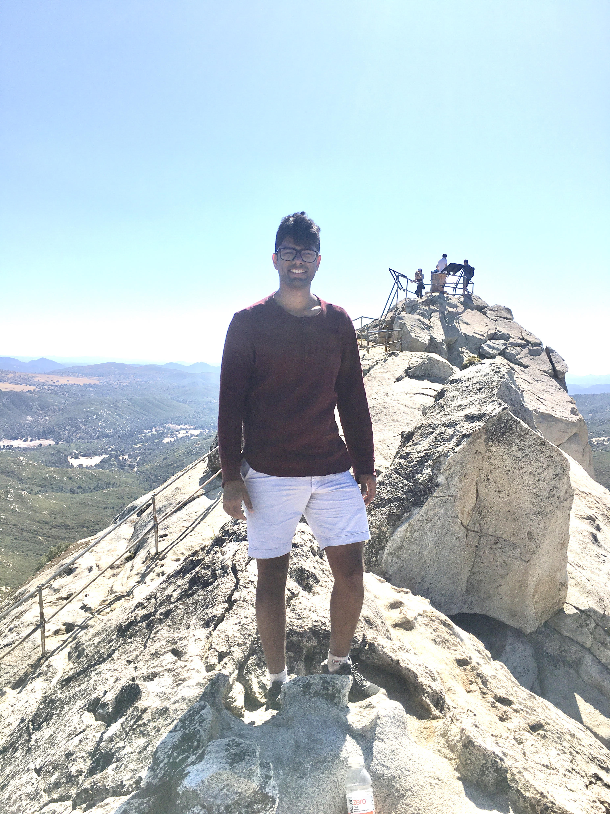

My name is Ritvik Vasan, I am a biophysics PhD from the Laboratory for Computational Cellular Mechanobiology at the University of California, San Diego, advised by Prof. Padmini Rangamani. I'm a biophysicist and machine learning scientist. I like to use both data-driven modeling and theoretical modeling to solve complex problems. Here are press releases in - phys.org and jacobsschool.ucsd.edu related to one of my data-driven projects. I like open source tools. Checkout my github to see all the things that I've worked on. My most recent project is a framework and set of tools to drive modular deep learning projects, currently being developed within the context machine learning projects at the Allen Institute for Cell Science.
Before my PhD, I obtained a B.S. degree in the Mechanical Engineering department at BITS Pilani, India in 2015. My undergraduate thesis was on implementing a low cost cellphone microscope for malaria diagnosis.
I am a big soccer fan, competitive squash player, recreational guitarist, carnatic music singer (by training), learning salsa dancer, long distance runner, constant coffee-drinker and occasional hiker. Here's a picture of me at Cuyamaca Rancho State Park in July 2019!
hIPSc variance paper is under review at Nature.
Follow up actin self organization paper is accepted to Developmental Cell.
3D membrane bending paper is accepted to Proceedings of the Royal Society A.
Actin self organization paper is accepted to eLife.
Machine learning perspective is accepted to Frontiers in Physics.
Neck paper is accepted by Soft Matter.
DLITE paper is accepted by Biophysical Journal.
Completed internship at the Allen Institute for Cell Science, supervised by Dr. Gregory Johnson.
Chair of cell mechanics, mechanosensing and motility subgroup at Biophysical Societys 2019.
Presented a talk at Biophysical Society 2019.
Presented a poster at American Society for Cell Biology 2018.
Completed internship at the Allen Institute for Cell Science, supervised by Dr. C. Dave Williams.
Traction paper is accepted by Molecular Biology of the Cell.